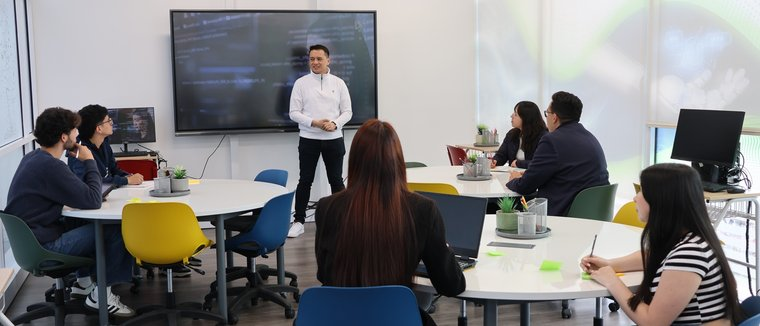

Material confidencial de aliados · no distribuir
Jornada de trabajo · campus
CleantechHUB × Escuela Colombiana
HELIX-A
Sesión de trabajo presencial · martes 10 de noviembre de 2026 · 14:30 (hora Colombia)
Por qué estamos aquí
Innovación climática aplicada
Propuesta de conversación: cómo conectar industria, laboratorios y talento para pasar de ideas a evidencia y a despliegue, sin compromisos contractuales en esta presentación.
Enfoque
Retos corporativos con rigor, datos trazables y emprendimiento verde como canal de soluciones.
TONO
Capacidades y rutas de trabajo conjunto; no es una propuesta comercial ni promesa de resultados.
Quién es CleantechHUB
Programas y plataformas
- Emprendimiento Verde (Green Entrepreneurship) — la competencia regional ClimateLaunchpad, con CleantechHUB como organizador nacional en varios países de Latinoamérica.
- Retos corporativos — acompañamiento para enmarcar preguntas de negocio y conectar con equipos que puedan validarlas.
- Datalab — evidencia y madurez de datos, con gobernanza clara de roles e IP.
HELIX-A × CleantechHUB
Encaje entre focos
Empezamos donde nuestro trabajo se encuentra con tres núcleos: Energía y Sostenibilidad, Territorios Inteligentes e Inteligencia Digital.
Datalab, analítica, tableros y gobierno del dato para retos y sandboxes.
Emprendimiento Verde (ClimateLaunchpad), retos de cadena de valor, proyectos de electrificación y transición (p. ej. cooperativas energéticas).
Sandboxes abiertos (aire, agua, energía, residuos), Living Labs con actores locales.
| HELIX-A (núcleo) | Conexión con CleantechHUB |
|---|---|
| Salud y bio-innovación | Programas y mentorías alineados con ODS; co-creación cuando exista afinidad temática. |
| Industria del futuro | Validación con laboratorios, pilotos de bajo riesgo y escalamiento gradual. |
Emprendimiento Verde
ClimateLaunchpad · cifras de referencia
Global: más de 4.150 postulaciones desde más de 50 países. CleantechHUB lideró el programa nacional en cinco países: Colombia, Perú, Costa Rica, Guatemala y El Salvador.
- Final Nacional Colombia (20 ago., U. Externado): 27 startups; 8 grandes finalistas en la final en vivo; ganadora CurubaTech.
- Mini-final Centroamérica (25 ago., con U. Rafael Landívar): 9 startups; ganadora Piña & Kakaw (GT).
- Regional Américas (anfitrión CleantechHUB): semifinal 3 sep con 24 equipos de 8 países; final 4 sep con 6 finalistas (Ecolure EC, Terra IO CO, YakuSmart PE, Funguspack EC, Requecho AR, Téscere Biotextiles MX). YakuSmart y Requecho pasaron a la Gran Final Global en Singapur (14 oct.).
- Cartera Nexus / explorador CLP26: 102 startups de 10 países; 53 con one-pager bilingüe publicado.
En doble vía: mentoría, validación y co-desarrollo para startups de CleantechHUB y spin-offs de la Escuela.
Por país
Embudo de programa
Temáticas
Explorador de startups
Misma fuente: data/startups.json. Filtra por país, tema y etapa.
| Startup | País | Tema | Etapa |
|---|
Datalab · evidencia confiable
Datalab powered by CleantechHUB
CleantechHUB actúa como custodio de datos para el modelo de trabajo; los socios conservan sus datos brutos y su propiedad intelectual según lo acordado en cada iniciativa.
- Vitrina pública — resultados agregados y narrativa para visibilidad.
- Living Lab — tres actores, ventana típica 90–180 días.
- Producto cliente — entrega de resultados de solo lectura.
- Datatón — concentración exploratoria con equipos académicos y de campo.
Logo maestro opción A · datagrid
Método e invitación
Madurez L1–L5 en 14 criterios
El marco evalúa madurez en niveles L1 a L5; esta sesión solo describe el método, sin puntuaciones de empresas ni tableros confidenciales.
Air4U como socio de innovación · CleantechHUB como custodio de datos · Universidad Externado como socio de investigación · asiento corporativo abierto · línea base a partir de RMCAB e IDEAM SISAIRE. Sandboxes hermanos: Open Energy, Open Water, Open Waste.
Gobernanza: alojamiento en la Unión Europea, modelo de steward, respeto a Habeas Data (Ley 1581 de 2012) en el diseño de tratamiento de datos personales.
Ejemplo breve
Cooperativas de energía
Capacidades de priorización territorial y modelado con datos públicos y satelitales (sin calificar resultados como piloto cerrado).
- 1.000 comunidades priorizadas (MinEnergía)
- 221 coincidencias con registro; 35 con alta confianza
- Capas: IMPE, UPME ICEE 2024, NASA POWER, IPSE ZNI
Corozal (Sucre) — comunidad candidata para profundizar diagnóstico (no se presenta aquí como piloto cerrado).
Imagen de contexto energético (ilustrativa).

Cómo trabajamos juntos
Del reto al Living Lab
Un reto de empresa + una startup + laboratorios de la Escuela (validación) pueden conformar un Living Lab; lo que gana tracción puede escalar con más actores y datos.
Los proyectos con tracción pueden postularse juntos a MinCiencias, SGR y otras convocatorias, cuando haya afinidad y capacidad por parte de ambos lados.
CleantechHUB puede apoyar a priorizar retos, acotar alcances y preparar la narrativa técnica antes de postular.
Fotos de laboratorio y campus (sitio institucional).

Puente de talento
Empleo, prácticas y formación
- Bolsa de empleo gratuita de la Escuela (uso regulado) para conectar perfiles con CleantechHUB y su red.
- Prácticas en ciclos marzo–agosto y septiembre–enero.
- Aceleradora liderada por María Paula Gómez — lanzamiento previsto hacia finales de 2026 o inicios de 2027, alineado con los focos de HELIX-A.
- Cursos cortos corporativos de la Escuela como complemento.
Plan de Desarrollo Institucional
Alineación exploratoria
HELIX-A puede servir de vehículo para conectar iniciativas con ejes del PDI, sin atribuir compromisos institucionales en esta diapositiva:
Investigación e innovación
Empuje emprendedor, laboratorios y retos con industria.
Relación con el entorno
Observatorio, pasantías y vocación de servicio.
Infraestructura sostenible
Gestión ambiental y campus como demostrador.
HELIX-A · imagen institucional (ilustrativa).
Invitaciones
Qué explorar con HELIX-A
Invitaciones a conversar, no compromisos:
Un Datatón y rutas para estudiantes.
Un asiento de investigación o laboratorio en Open Energy, Open Water u Open Waste.
Un primer Living Lab con una empresa, una startup de la red CleantechHUB y la Escuela como casa académica.
Próximos pasos
Ruta de conversación
Primera actividad conjunta: sesión de trabajo con empresas, startups e investigadores de la Escuela.
- Formalizar el entendimiento entre equipos.
- Compartir una presentación de sandbox (breve) alineada con HELIX-A.
- Nombrar una primera actividad conjunta concreta.
- Apuntar, como horizonte exploratorio, a uno o dos pilotos en el primer semestre de 2027 (sin fijar condiciones aquí).
Un punto focal por cada parte, seguimiento periódico y un pipeline compartido de oportunidades.
Abiertos a otras áreas, programas y aliados nacionales e internacionales.